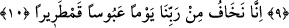

BİZ, ÇETİN VE BELÂLI
BİR GÜNDEN KORKARIZ
5. İyiler ise, kâfûr katılmış bir kadehten (cennet şarabı) içerler.
6. (Bu,) Allah’ın has kullarının içtikleri ve akıttıkça akıttıkları bir pınardır.
7. O kullar, şiddeti her yere yayılmış olan bir günden korkarak verdikleri sözü
yerine getirirler.
8. Onlar, kendi canları çekmesine rağmen yemeği yoksula, yetime ve esire
yedirirler.
9. «Biz sizi Allah rızası için doyuruyoruz; sizden ne bir karşılık ne de bir teşekkür
bekliyoruz.»
10. «Biz, çetin ve belâlı bir günde Rabbimizden (O’nun azâbına uğramaktan)
korkarız» (derler).
5) “Şüphesiz iyiler…” Bu ifâde, kâfirlerin kötü hâllerinin beyân edilmesinin ardından
şükreden müminlerin iyi hâllerinin anlatımına başlanma cümlesidir. Âyetin başında
müminlerin “ebrâr/itâat edenler” kelimesi ile ifâde edilmeleri, onların Allah katında
ulaşmış oldukları ikram ve kerâmeti ne ile hak ettiklerine işâret etmek içindir. “Ebrâr”,
“berr” ya da “bârr” kelimelerinin çoğuludur. “Berr” veya “bârr” ise yaratıcısına itâat
eden kul demektir.
Hasan Basrî (rh.); Berr kelimesinin “küçük bir karıncaya bile eziyet etmeyen ve
içinde kötülük gizlemeyen kişi” demek olduğunu ifâde etmiştir. Nitekim şâirin biri bu
kelimeyi Hasan Basrî’nin ifâde ettiği anlamda beytinde şöyle kullanmıştır:
İstersen kemâl, eziyet etme! Hattâ karıncaya,
Canın tatlıysa...o da böyle. Nasıl dayansın acıya!
Müfredat’ta “el-berr” kelimesi, “el-bahr/deniz” kelimesinin zıddı olarak
açıklanmaktadır. Bu müellife göre kelimeden “tevessu’/genişlik” anlamı tasavvur
olunmuş, bundan da hayır ve hasenatta genişlik anlamı türetilmiştir. Bu anlama gelmek
üzere “
” ifâdesi kullanılır olmuştur ki anlamı “kul Rabbine itâatte geniş